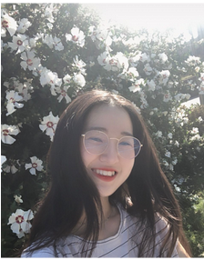
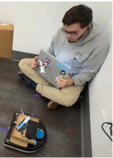
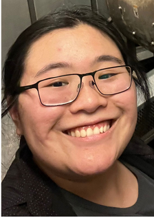
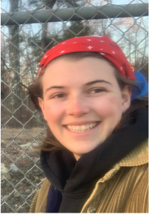
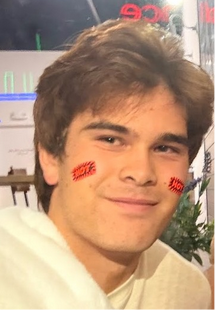

Learn more about the team behind DIY Pro!

I'm Trinity Lee, a senior pursuing computer engineering at Olin College of Engineering. I enjoy exploring user-centered designs and its intersection between software.

I’m Charlie Mawn, a junior studying software robotics at Olin College. I enjoy applying human centered design principles to technical robotics applications.

I’m Lily Wei, a junior studying Engineering with a Concentration in Computing at Olin. I am passionate about creating meaningful tools and products with real-world impact.

I’m Kelsey McClung, studying engineering and computer science at Olin College. I admire repair and DIY communities and am excited to be working on DIYPro.

I’m AJ Bulow, a junior studying mechanical engineering at Olin College. I love working on cars in my free time and building computers. I strive to bring new people into these hobbies and get them hands-on with the things they own whenever I can!